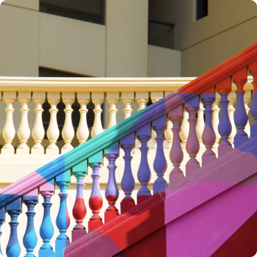
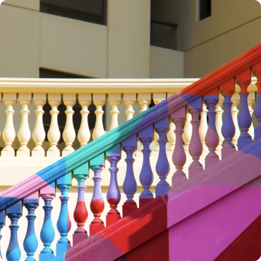

Design and code

Many Useful Components
With Startup Framework, we don’t make you start from an empty slate. All you have to do is to pick the elements you like best and combine them together and we guarantee that it will look fantastic.
 
